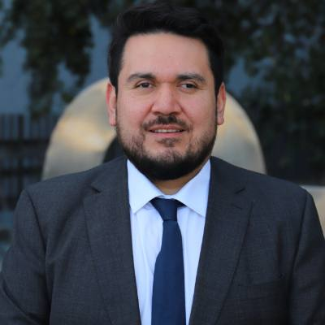

Administración y políticas públicas Public administration & policy
Juan Pablo Araya Orellana
Profesor Asistente, Departamento de Administración, Facultad de Administración y Economía, Universidad Diego Portales. Ph.D. en Public Administration and Policy, University of Georgia. Assistant Professor, Department of Administration, Faculty of Administration and Economics, Universidad Diego Portales. Ph.D. in Public Administration and Policy, University of Georgia.
Estudio la autonomía y la influencia de las burocracias públicas, las reformas al servicio civil, la política ejecutiva y el liderazgo público, con énfasis en Chile y América Latina. I study the autonomy and influence of public bureaucracies, civil service reform, executive politics and public leadership, with a focus on Chile and Latin America.
Escuela de Administración Pública · Facultad de Administración y Economía
Santiago de Chile
School of Public Administration · Faculty of Administration and Economics
Santiago, Chile

BioAbout
Trayectoria, formación e interesesBackground, education and interests
Soy Profesor Asistente del Departamento de Administración de la Facultad de Administración y Economía de la Universidad Diego Portales, en Santiago de Chile, donde enseño en la Escuela de Administración Pública. Obtuve el Ph.D. en Public Administration and Policy en la School of Public and International Affairs de la University of Georgia (2026), con especialización en políticas públicas. Mi tesis doctoral, Bureaucratic Autonomy in Comparative Perspective, fue dirigida por Gene A. Brewer, con Andrew B. Whitford y L. Jason Anastasopoulos como miembros del comité.
Mi investigación se centra en las burocracias públicas y su autonomía, las reformas al servicio civil, la política ejecutiva, el liderazgo público y la administración y políticas públicas comparadas. Mi trabajo ha sido publicado en Public Administration Review, International Journal of Public Administration, Public Organization Review, Convergencia, Historia 396 y Revista de Gestión Pública, entre otras revistas, y en capítulos de libro y entradas de la Global Encyclopedia of Public Administration, Public Policy, and Governance (Springer).
Antes de incorporarme a la UDP fui asesor legislativo jefe en el Congreso de la República de Colombia (2018–2021), coordinador académico del pregrado en Administración Pública de la Universidad de Chile (2010–2018) y de la Universidad de O'Higgins (2020–2023), y asistente de investigación en la University of Georgia. He dictado cursos de pregrado y posgrado en la Universidad de Chile, la Universidad de Santiago de Chile, la Universidad de O'Higgins, la Universidad Autónoma de Chile, la Universidad de Los Lagos y la Universidad Católica de Temuco.
Soy Magíster en Ciencia Política (distinción máxima) y Administrador Público (distinción máxima) por la Universidad de Chile, donde también obtuve la Licenciatura en Ciencia Política y Gobierno con mención en Gestión Pública. Fui becario Fulbright para estudios doctorales en Estados Unidos y recibí la Zell Miller Scholarship for Public Leadership y la Thomas P. and M. Jean Lauth Graduate Fellowship de la University of Georgia. En 2025 recibí el premio al Mejor Docente en Administración Pública de la Facultad de Administración y Economía de la UDP.
He sido entrevistado y citado por medios como La Nación y Clarín (Argentina), La Razón (España), Forbes y Huffington Post (en español), El Mercurio, Radio Biobío y Chilevisión (Chile) sobre política, políticas públicas y administración pública.
I am an Assistant Professor in the Department of Administration at the Faculty of Administration and Economics, Universidad Diego Portales, in Santiago, Chile, where I teach in the School of Public Administration. I earned a Ph.D. in Public Administration and Policy from the School of Public and International Affairs at the University of Georgia (2026), with a subfield specialization in public policy. My dissertation, Bureaucratic Autonomy in Comparative Perspective, was chaired by Gene A. Brewer, with Andrew B. Whitford and L. Jason Anastasopoulos as committee members.
My research focuses on public bureaucracies and their autonomy, civil service reform, executive politics, public leadership, and comparative public administration and policy. My work has appeared in Public Administration Review, International Journal of Public Administration, Public Organization Review, Convergencia, Historia 396 and Revista de Gestión Pública, among other journals, as well as in book chapters and entries in the Global Encyclopedia of Public Administration, Public Policy, and Governance (Springer).
Before joining UDP, I was head legislative advisor in the Congress of the Republic of Colombia (2018–2021), academic coordinator of the undergraduate program in Public Administration at the University of Chile (2010–2018) and at O'Higgins State University (2020–2023), and a research graduate assistant at the University of Georgia. I have taught undergraduate and graduate courses at the University of Chile, the University of Santiago de Chile, O'Higgins State University, Universidad Autónoma de Chile, University of Los Lagos and the Catholic University of Temuco.
I hold an M.A. in Political Science (highest distinction) and a professional degree in Public Administration (highest distinction) from the University of Chile, where I also earned a B.A. in Political Science and Government with a specialization in public management. I was a Fulbright scholar for doctoral studies in the United States and received the Zell Miller Scholarship for Public Leadership and the Thomas P. and M. Jean Lauth Graduate Fellowship at the University of Georgia. In 2025 I received the Best Instructor in Public Administration Award from UDP's Faculty of Administration and Economics.
I have been interviewed and quoted by media outlets such as La Nación and Clarín (Argentina), La Razón (Spain), Forbes and Huffington Post (in Spanish), El Mercurio, Radio Biobío and Chilevisión (Chile) on politics, public policy and public administration.
PublicacionesPublications
Artículos, capítulos y trabajos en evaluación, más recientes primeroArticles, chapters and papers under review, newest first
Artículos en revistas indexadasJournal articles Web of Science
- 2026
- 2024
- 2022
- 2021
-
2019
Trayectoria histórica de la tecnocracia en Chile (1850–1970)
- 2016
- 2014
Otros artículos arbitradosOther peer-reviewed articles
- 2023
- 2016
- 2016
- 2012
Capítulos de libro y entradas de enciclopediaBook chapters and encyclopedia entries
-
2022
Tecnócratas en la vieja democracia chilena (1850–1970)
- 2020
-
2019
Aprendizaje y servicio en la Universidad de Chile: vinculando la docencia con las necesidades del país
-
2018
Desafío y propuestas de política pública ante el riesgo: integrando a las comunidades
- 2017
-
2015
Experiencias de innovación pedagógica en la Escuela de Gobierno y Gestión Pública de la Universidad de Chile
- 2014
-
2013
Partenariats public-privé, mouvements sociaux et discriminations : le cas de la reconstruction chilienne post-tremblement de terre et tsunami
Trabajos en evaluación y en cursoPapers under review and in progress
-
—
Forming a Measuring Index for Institutional Public Service Motivation in State Civil Service Systems
En evaluaciónUnder review -
—
Revisiting Latin American Public Administration: Institutional Trajectories, Intellectual Traditions, and Global Asymmetries
Resumen aceptadoAbstract accepted -
—
Assessing the Influence of Leadership Styles on Public Service Performance in Public Organizations
En evaluaciónUnder review -
—
Building Disciplinary Identity in Public Administration Education: Lessons from Chile and the Global South
En evaluaciónUnder review
DocenciaTeaching
Cursos de pregrado y posgrado, y gestión académicaUndergraduate and graduate courses, and academic management
Experiencia docenteTeaching experience
- Taller de Políticas PúblicasPublic Policy Workshop
- Liderazgo PúblicoPublic Leadership
- Sistema PolíticoPolitical System
- Evaluación de Políticas PúblicasPolicy Evaluation
- Fundamentos de Administración PúblicaFoundations of Public Administration
- Public Personnel Management
- Public Policy Implementation
- Comparative Public Administration
- Public Management
- Implementación de Políticas PúblicasPolicy Implementation
- Proceso de Políticas PúblicasPolicy Process
- Evaluación de Políticas PúblicasPolicy Evaluation
- Introducción a las Políticas PúblicasIntroduction to Public Policy
- Liderazgo PúblicoPublic Leadership
- Evaluación de Políticas PúblicasPolicy Evaluation
- Innovación en el Sector PúblicoPublic Sector Innovation
- Dinámicas Políticas en el EstadoPolitical Dynamics in the State
- Gestión Financiera LocalLocal Financial Management
- Liderazgo PúblicoPublic Leadership
- Teoría de la Administración PúblicaTheory of Public Administration
- Proceso de Políticas PúblicasPolicy Process
- Teoría OrganizacionalOrganizational Theory
- Introducción a la Administración PúblicaIntroduction to Public Administration
- Teoría de la Administración PúblicaTheory of Public Administration 2014–18, 2020–22
- Política de la Administración PúblicaPolitics of Public Administration 2016–18
- Introducción a la Administración PúblicaIntroduction to Public Administration 2015–18
- Introducción al Estudio del Gobierno y la Administración PúblicaIntroduction to the Study of Government and Public Administration 2014–18
- Evolución y Complejidad de la Administración PúblicaEvolution and Complexity of Public Administration 2015, 2021–22
- Epistemología de la Administración PúblicaEpistemology of Public Administration 2015
Gestión académicaAcademic management
Asesor de la Comisión de Creación e Implementación del Programa de Estudios en Ciencia Política (2013–2018) y asistente de la Comisión de Modernización del Plan de Estudios de Administración Pública (2010–2012).Advisor to the Commission for the Creation and Implementation of the Political Science Program (2013–2018) and assistant to the Commission for the Modernization of the Public Administration Curriculum (2010–2012).
InvestigaciónResearch
Proyectos y experiencia de investigaciónProjects and research experience
Forming a Measurement Index for Institutional Public Service Motivation in State Civil Service Systems (Gene A. Brewer) yand Comparing Fiscal Rules and Political Accountability in Subnational Governments in Colombia and Chile (Felipe Lozano Rojas).
Implementación de políticas públicas indígenas en Chile: evidencia y aportes desde la teoría de la burocracia representativaImplementation of Indigenous Public Policies in Chile: Evidence and Contributions from the Theory of Representative Bureaucracy (Verónica Figueroa Huencho).
Agenda y políticas públicas en la vieja democracia, 1925–1973Agenda and Public Policies in the Old Democracy, 1925–1973 (Mauricio Olavarría Gambi).
Alianzas público-privadas y participación ciudadana en procesos de reconstrucción post-desastrePublic-Private Partnerships and Citizen Participation in Post-Disaster Reconstruction Processes (Paulina Vergara Saavedra).
Implementación de políticas públicas en Chile: análisis de los casos de modernización de la gestión pública, Plan AUGE-GES y TransantiagoImplementation of Public Policies in Chile: the Cases of Public Management Modernization, the AUGE-GES Plan and the Transantiago Program (Mauricio Olavarría Gambi).
Análisis del proceso de construcción de alianzas público-privadas en ChileAnalysis of the Construction Process of Public-Private Partnerships in Chile (Verónica Figueroa Huencho).
Las dos dimensiones de la ética pública: factores que explican la corrupción en Chile y marcos éticos para los funcionarios públicos chilenosThe Two Dimensions of Public Ethics: Factors Explaining Corruption in Chile and Ethical Frameworks for Chilean Public Officials (Cristián Pliscoff Varas).
Ética pública: ¿cómo y qué piensan los funcionarios públicos chilenos?Public Ethics: How and What Are Chilean Public Officials Thinking? (Cristián Pliscoff Varas).
PonenciasConference papers
Congresos y conferencias, más recientes primeroConferences and presentations, newest first
- 2025
Controlled or Independent Agencies? Assessing the Influence of Administrative Factors on Formal Agency Independence
XVII Congreso de la Sociedad Chilena de Políticas Públicas · Santiago, Chile
- 2024
Forming a Measuring Index for Institutional Public Service Motivation in State Civil Service Systems (conwith G. A. Brewer yand J. Taylor)
Public Management Research Conference (PMRC) · Washington, D.C. — International Research Society for Public Management (IRSPM) · Tampere, Finland
- 2024
Assessing the Influence of the Leadership Styles on Public Service Performance in Public Organizations
Midwest Political Science Association (MPSA) · Chicago
- 2023
Managerial and Political Determinants of the Structural Autonomy of Public Agencies (conwith G. A. Brewer)
IPSA World Congress of Political Science · Buenos Aires
- 2023
Thirty Years of Administrative Reforms in Chile: Analyzing Anticipated Increases in Managerialism and Agency Autonomy under New Public Management (conwith G. A. Brewer)
IRSPM Conference · Budapest
- 2022
Transportation Infrastructure Partnerships and Government Control of Corruption in Developing Countries: Impact on Level of Private Investment (conwith G. Brewer yand A. Karunaratne)
26th International Public Management Network Conference · Arizona State University
- 2018
Formulación de políticas públicas en Chile: estudios comparativos entre la vieja y la nueva democracia
XIII Congreso Chileno de Ciencia Política · Santiago, Chile
- 2018
Formulación de políticas públicas en la vieja democracia en Chile: análisis de las políticas de salud, previsión social y modernización de la gestión pública
XIII Congreso Chileno de Ciencia Política · Santiago, Chile
- 2017
Indigenous Public Policy Implementation: Changes and Interaction between Formal and Informal Institutions (conwith V. Figueroa)
3rd International Conference on Public Policy (ICPP3) · Singapore
- 2016
Influencia burocrática en el proceso de formulación de política pública: evidencias de la política de modernización de la gestión pública (1990–2014)
XII Congreso Chileno de Ciencia Política · Pucón, Chile
- 2013
La transparencia colaborativa como instrumento de una participación más inclusiva en la administración pública (conwith R. Valenzuela)
XVIII Congreso Internacional del CLAD · Montevideo, Uruguay
- 2013
Public Private Partnership, Social Movements and Discrimination: The Case of Chilean Post-Earthquake and Tsunami 2010 (conwith P. Vergara)
1st International Conference on Public Policy · Grenoble, France
- 2012
Alianzas público-privadas y participación ciudadana: desafíos para el fortalecimiento de la democracia
Congreso Latinoamericano de Ciencia Política (ALACIP) · Quito, Ecuador
CV y contactoCV & contact
Currículum, distinciones y afiliacionesCurriculum vitae, honors and memberships
- Emailjuanpablo.araya@udp.cl
- TeléfonoPhone+56 2 2676 0170
- OficinaOfficeDepartamento de Administración, Facultad de Administración y Economía, Universidad Diego Portales
Av. Santa Clara 797, Huechuraba, Santiago, ChileDepartment of Administration, Faculty of Administration and Economics, Universidad Diego Portales
Av. Santa Clara 797, Huechuraba, Santiago, Chile - ORCID0000-0002-4797-1838
- ScholarGoogle Scholar
- ANIDPortal del InvestigadorResearcher Portal
- GitHubjpabloaraya
- Premio Mejor Docente en Administración Pública 2025Best Instructor in Public Administration Award 2025 · Facultad de Administración y Economía, Universidad Diego PortalesFaculty of Administration and Economics, Universidad Diego Portales
- Fulbright Scholarship · estudios doctorales en Estados Unidos, Departamento de Estado de EE. UU.doctoral studies in the United States, U.S. Department of State
- Zell Miller Scholarship for Public Leadership · University of Georgia
- Thomas P. and M. Jean Lauth Graduate Fellowship · University of Georgia
- Apoyo a viajes doctoralesDoctoral Travel Support · University of Georgia · IPSA Buenos Aires eand IRSPM Budapest (2023); MPSA Chicago yand PMRC Washington (2024)
- Tesis de magíster financiada por FONDECYTMaster's thesis funded by FONDECYT · proyecto «Implementación de políticas públicas en Chile», USACH y CONICYT (2014–2015)project "Implementation of Public Policies in Chile", USACH and CONICYT (2014–2015)
- Fondo OEA para la Educación en Valores DemocráticosOAS Fund for Education in Democratic Values · Programa de Formación CiudadanaCitizen Education Program (2011–2012)
AfiliacionesMemberships Latin American Studies Association (LASA) · International Political Science Association (IPSA) · International Public Policy Association (IPPA) · Asociación Chilena de Ciencia Política (ACCP)Chilean Political Science Association (ACCP)
EvaluadorAd-hoc reviewer International Review of Administrative Sciences · Revista de Gestión Pública